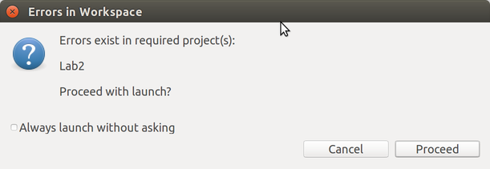
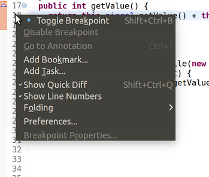
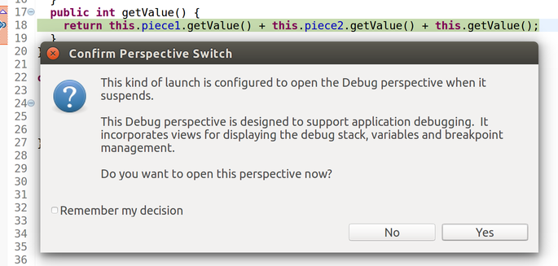
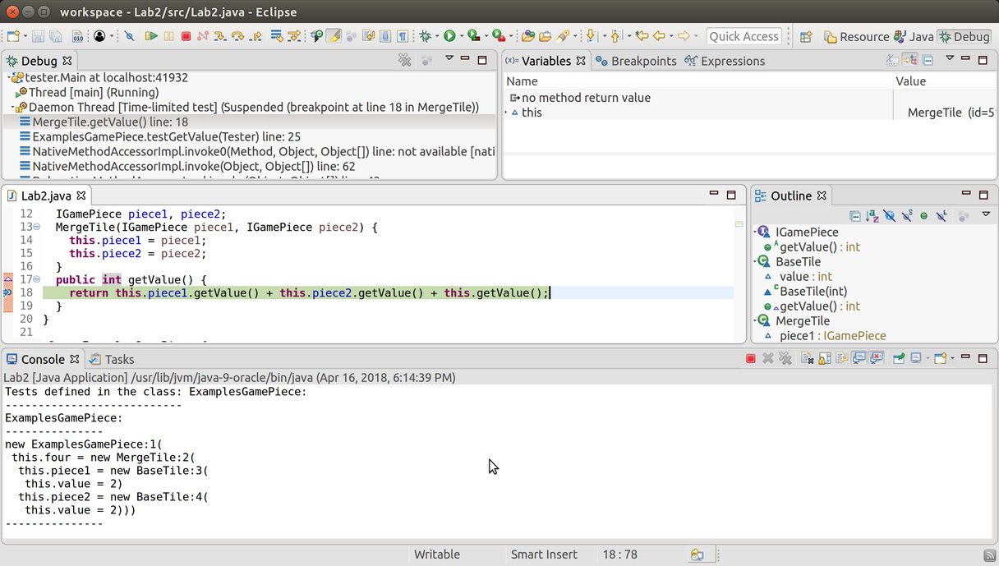
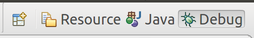

Lab 3: Working with the debugger
Submission: No submission for this lab, but you will be expected to know how to use the debugger in Eclipse after this lab!
Goals: The goals of this lab are to review data definitions and practice designing methods for a variety of class hierarchies as well as working with the debugger in Eclipse.
For this lab, there are no starter files. For each problem, start a new project and build the files from scratch.
Problem 1: The Game of 2048
3.1 Self-Referential Data
The sliding-tiles game 2048 was all the rage a couple of years ago. The gameplay itself is not that complicated, but since we don’t have all the necessary skills yet, we aren’t going to implement the full game right now. Instead, we’re going to model some of the data behind the gameplay.
Conceptually, a game piece is either a base tile or a merge tile that has two component tiles it merged from. Every game piece can tell you its value, and can merge with another game piece to form a combined tile. Assume all base tiles will have a positive, integer value: for 2048, the default starting value is 2.
;; A GamePiece is one of ;; -- (make-base-tile Number) ;; -- (make-merge-tile GamePiece GamePiece) (define-struct base-tile [value]) (define-struct merge-tile [piece1 piece2])
Convert this data definition into Java classes and interfaces. Make examples of several merged tiles.
With the game-piece classes above, design the following:
Design a method getValue that returns the value of a game piece. The value of a merged tile is always the sum of the values of its components.
- Design a method merge that combines this game piece with the given game piece to form a merged piece. (Ignore the precise validity-checking rules of 2048 for now; suppose that any two tiles can be merged.)
We’ll learn soon how to enforce these rules, and also how to generalize them to variations on 2048’s gameplay.
Design a method isValid that checks whether this game piece was created according to the rules of 2048: only equal-valued pieces can merge.
Problem 2: Using the Debugger
3.1 Guided Examples
This section introduces you to working with the debugger, the equivalent of the stepper in DrRacket. The debugger is more powerful than the stepper, and allows you to pause your program at a particular line, examine the variables available to you, examine the call stack, and many other abilities too. This is necessarily a very brief introduction, and you will learn more about the debugger over time simply by using it and experimenting with it on your own.
Note: using the debugger will not help you fix compile-time errors (like type-mismatches or using a name that doesn’t exist). It can only help you once your program compiles but does not run correctly. Eclipse will warn you that your code has compile errors before running; you should get in the habit of fixing them, rather than ignoring the warning!  (Confusingly, Eclipse will still try to run your program...but it will run the latest version that did manage to compile, rather than the current code. This can cause lots of problems with debugging, since the code you’re looking at isn’t the code that’s running.)
3.1.1 Breaking into the debugger
To use the debugger, click the green bug icon in the toolbar instead of the green circle/triangle Run icon: Most likely, nothing interesting happens: your program simply runs, just as it did before. However, let’s suppose that your code has an error, and you’d like to figure out why.
import tester.*; // NOTE: Templates and purpose statements left out: You should fill them in yourself! interface IGamePiece { int getValue(); } class BaseTile implements IGamePiece { int value; BaseTile(int value) { this.value = value; } public int getValue() { return this.value; } } class MergeTile implements IGamePiece { IGamePiece piece1, piece2; MergeTile(IGamePiece piece1, IGamePiece piece2) { this.piece1 = piece1; this.piece1 = piece2; } public int getValue() { return this.piece1.getValue() + this.piece2.getValue() + this.getValue(); } } class ExamplesGamePiece { IGamePiece four = new MergeTile(new BaseTile(2), new BaseTile(2)); boolean testGetValue(Tester t) { return t.checkExpect(four.getValue(), 4); } }
Do Now!
What implementation mistakes do you see in the code above? (Ignore the lack of purpose statements and templates: those are deliberate since we do not intend to give you the answer here!) Write down your predictions first, before running this code.
Do Now!
Try clicking on these links, yourself. What happens when you click on a link that doesn’t belong to your own code?
The NullPointerException is clickable too, but it controls something else: a different kind of breakpoint besides the ones we’ll discuss below. If you’re curious, try coming back to this after you’ve tried the other fixes below, and try enabling this breakpoint. You’ll want to explore the Breakpoints tab, too, once you’ve done this, in order to delete this breakpoint once you’re done with it!
Do Now!
What line of code do you think might be useful to pause on? Why?

Select Toggle Breakpoint. (There is also a shortcut key to do this: on my machine, it is Ctrl+Shift+B, as indicated by the text on the right side of the context menu.) Visually, this will add a little blue circle in the margin to the left of the line number. That signifies a breakpoint, which will cause your program to pause whenever you execute your program in debugging mode, and execution reaches that line. You can repeat this process to remove the breakpoint again, when you’re done debugging the problem.
Press the Debug button to launch your program. You should see a window pop up:

Check the Remember my decision box, and click Yes. This will suddenly rearrange all your windows and tabs:

Most important: At the upper-right in the toolbar, you should see Java and Debug. (You might not see the words, just the icons.)  You can click Java to get back to your original window layout.
In the top left, the Debug tab shows you the current call stack. You can click on lines of the call stack to jump to the relevant line of code. (Right now, line 18 is focused.)
In the middle is your code, and the outline of your program.
At the bottom, the Console tab shows the current output of your program.
In the top right, the Variables tab shows you the variables that are currently in scope. Right now, the only variable available is this.
Next to it is the Breakpoints tab, which shows all the current breakpoints you have enabled. We don’t need this much right now.
In the upper-left in the toolbar, you’ll see several icons related to stepping: From left to right, these are: Resume the program, Pause the current program, Stop debugging, Disconnect, Step into the next method call, Step over the next method call, and Step out of the current method. You can ignore Disconnect entirely; the others will be useful.
3.1.2 Stepping into, viewing Variables, thinking about the stack
Do Now!
Double-click on this in the Variables tab, or click on the expansion arrow to its left, to see the fields that it has. Also try hovering over this, this.piece1 and this.piece2 in the code area. What do you see?
Do Now!
Can you figure out the first bug in the code above?
Do Now!
List all the changes that just happened.
Hover over this and this.value in the code area. You should see that the values look fine. Press any of the stepper buttons once to continue. (In this setting, all three stepper buttons do the same thing, since we are at the point of returning from a method, so there is nothing to step into or over. Don’t use the Resume button here; that will run your program until it encounters the next breakpoint, and there might not be any more breakpoints.) The active line moves back to line 18. Evidently, the call to this.piece1.getValue() has succeeded. Press Step into again, to try the next call to this.piece2.getValue(). Suddenly everything breaks, and you’re taken to the constructor for a NullPointerException. Suspicion confirmed: the fact that piece2 is null is the problem.
Do Now!
Will this help? Why or why not?
Do Now!
Debug the program. When you get to line 14, double-click the this in the Variables tab. Press Step into once, and observe the changes in the Variables tab. What line gets highlighted yellow? Press Step into once more. What happens?
Since piece2 remains null, evidently our mistake must be here. Carefully reading the code reveals the typo: we initialized piece1 twice by mistake.
Do Now!
Press Stop to stop the program. Fix the code, and debug it again. This time, when you get to line 14, press the Resume button to keep running after the breakpoint. What happens now?
3.1.3 Stepping over, stepping out
We have another problem: the tester library reports stack overflowed while running test. This means that we have an unbounded recursion somewhere in our program. Looking at the stack trace (be sure to scroll to the very top) is quite boring: it consists of hundreds of red lines all blaming line 18 of our program.
Do Now!
Clear all the breakpoints you currently have, and put a breakpoint on line 18 again. Debug the program.
When you get to line 18, start stepping through the program again. Using Step into is tedious, since it will take us into the BaseTile implementations. Using the other two stepper buttons doesn’t seem to work. This is because we have three method calls all on one line, and Eclipse is quite simplistic when it comes breapoints and to your program’s layout. Add newlines before the plus signs on line 18, to split the three method calls onto three separate lines. Now, you can successfully use Step over to run the entirety of this.piece1.getValue() as a single step, and similarly for this.piece2.getValue(). Now use Step into to step into the call to this.getValue(). The stack trace in the Debug tab has grown, and nothing else has changed. Keep doing this a few times, until you recognize the problem: we are recurring into the exact same method on the exact same object – of course we’re stuck in an infinite recursion! This implementation does not properly follow the template: fix it, by eliminating the call to this.getValue() altogether, since it’s unneeded.
Stop and then debug the program one more time, to confirm that it works properly. Finally, click on Java in the upper-right toolbar to get back to the normal code-editing window layout.